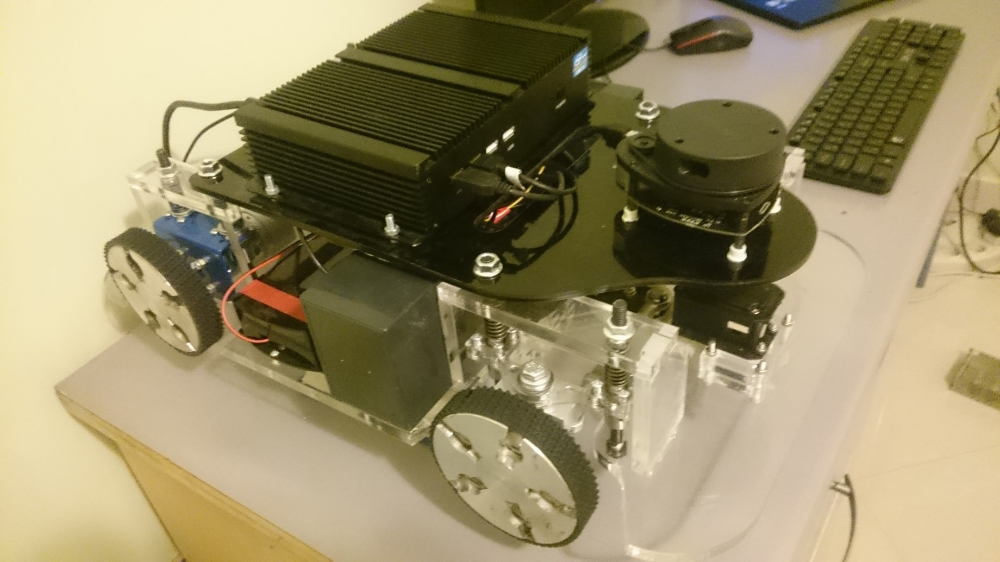

NAVbot navigation project is a wheeled AGV to perform navigation tests. It has two Devantech 24v Motors, RPLidar A2 360 degree Lidar and an Intel Core-i5 powered embedded computer. This robot can perform autonomous navigation in any desire indoor environments like offices and home. In this project, the final version of Hector SLAM is used to match Lidar data and predict the robot's location. Using just lidar data for navigation is not recommended because if the lidar sensor does not work or there are any hardware issues with it, the navigation module cant performs its task. In this project, we want to show that how can we fuse the localization output from Hector SLAM and fuse it with odometry localization output using an extended Kalman filter.
My responsibilities in the project:
- Indoor localization and mapping (SLAM)
- Development of DCM (Device Communication Manager)
- ROS software infrastructure designer
- ROS and Matlab interfacing
NAV Robot is an open-sourced project designed to perform various navigation algorithms
Scan matching is the process of aligning laser scans with each other or with an existing map. Modern laser scanners have low distance measurement noise and high scan rates. A method for registering scans might yield very accurate results for this reason. For many robot systems, the accuracy and precision of the laser scanner are much higher than that of odometry data, if available at all. Hector SLAM is based on optimization of the alignment of beam endpoints with the map learned so far. The basic idea of using a Gauss-Newton approach is inspired by work in computer vision. Using this approach, there is no need for a data association search between beam endpoints or an exhaustive pose search. As scans get aligned with the existing map, the matching is implicitly performed with all previous scans.
Hector SLAM DiagramIn this project, we do not have any IMU or GPS sources in the robot so that the only localization sources will be the Hector SLAM scan matcher and wheel odometry from robot kinematics. Also, we used to ROS costmap solution for defining obstacles in the map using a dynamic occupancy grid. By drawing the costmap margin from the map's occupated grids, we can perform the path planning using A* algorithm. After getting the desired path, we mark every 20 cm on it as our desire local goals. On the other hand, the planning algorithm plans the path every second. Finally, the PID control algorithm is used to control the robot navigation on local goals.
Kalman filtering, also known as linear quadratic estimation (LQE), is an algorithm that uses a series of measurements observed over time, containing statistical noise and other inaccuracies, and produces estimates of unknown variables that tend to be more accurate than those based on a single measurement alone, by using Bayesian inference and estimating a joint probability distribution over the variables for each timeframe
Path planning, the local goalsNav Robot a closer lookPerforming autonomous navigation (practical Test)
Hardware specifications:
- 2x 24v EMG 49 Devantech Motors
- 1x Dynamixel Ax12
- 1x Embedded computer with Core-i5 CPU and 4 GB Ram
- 1x RPLidar II 360 Lidar
- 1x Devantech MD 49 driver
- 1x ROBOTIS OpenCM9 for low-level operations
For the project source code, please visit :
https://github.com/cxdcxd/NAVbot